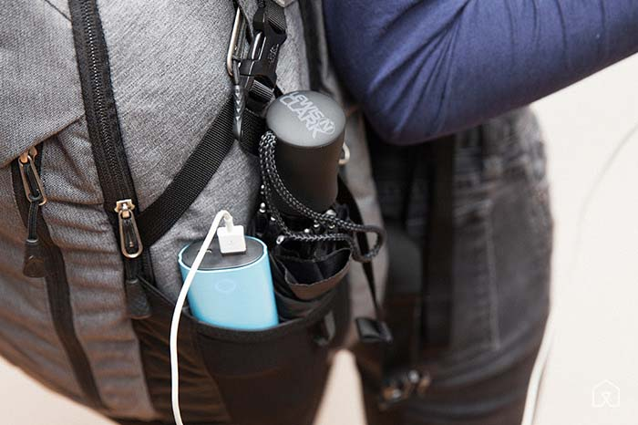

Get ready for college life! Our researchers have put in more than 150 hours over the past two years tracking down and testing the best school supplies, gadgets, and dorm life gear you'll need to make your return to campus as easy as it can be.
For even more college recommendations, as well as supplies for school-age kids, read our longer guide at The Sweethome.
Tech
Back to Top ↑Student laptops
We think that an ultrabook-style laptop, if you can afford one, is the best choice for college students. These small, thin, and light laptops offer long battery life, making them ideal tools for powering through a whole day of classes or an entire evening of studying. Such computers usually include great screens and keyboards, and although they might not have enough horsepower for work in advanced engineering or scientific modeling, they'll easily handle the moderately demanding tasks you'll run into on a daily basis, from note-taking to graphic design to number crunching. In other words, they represent the best compromise for most students.
Before you buy any laptop for college, find out whether your department has any particular hardware or software requirements, and see what discount and support options might be available through your school.
Apple Laptop
We've been reviewing Apple laptops for years, and the 13-inch MacBook Air is the laptop we recommend for most people. It offers great performance and battery life, the latest chips and the most-used ports, an unbeatable keyboard and trackpad (which other companies are still struggling to match), and an amazingly solid one-piece aluminum body. The MacBook Air has no major flaws. It doesn't have the high-resolution Retina display of the MacBook Pro—or even a 1080p screen—but we think that's okay given everything else the Air does have, and it's lighter and less expensive than the Pro. In our recommended configuration (8 GB of RAM and a 256GB solid-state drive), it should be able to handle all but the most-demanding student computing tasks, from spreadsheets to coding to design, and even light video editing (though you'll probably want to seek out a department desktop for doing 3D modeling, performing CAD tasks, or analyzing gigantic data sets).
We also like the MacBook Air for reasons other than its hardware: Apple's OS X is stable, easy to use, and bloat-free. And if you ever have a problem, Apple's legendary service and long commitment to education means you'll find service centers at many colleges as well as discounts on computers and AppleCare service plans. -Dan Frakes
Windows Ultrabook
If you prefer Windows—or if your department requires it—and you need a lightweight machine with good computing power and a great display, the $1,100 Dell XPS 13 is our current favorite Windows ultrabook. We picked the XPS 13 after more than 70 hours of research and testing in part because it has the longest battery life and the best keyboard of any model we tested. The XPS 13 has specs similar to our favorite 13-inch MacBook Air configuration for $200 less, including 8 GB of RAM, a 256GB solid-state drive, and an Intel Core i5-5200U processor that offers enough power to handle graphics work or data analysis.
This Dell model also offers a higher-resolution 13-inch display than the MacBook Air, in a slightly smaller and lighter package—in fact, the XPS 13 is closer in size to the 11-inch MacBook Air than to the 13-inch model. Our recommended configuration should be up to most tasks you'll encounter around campus, and the keyboard and trackpad are about as good as you'll find on a Windows laptop these days. Like Apple, Dell offers education discounts, in this case via the company's Dell University program. Check with your school for details. -DF
If you need to run Windows and your budget won't stretch to cover the XPS 13, get the $700 ASUS Zenbook UX305. It's the best cheap ultrabook we've found—you have to spend between $200 and $400 more to get a better one. This slim and light model has great battery life.
We recommend the UX305FA-ASM1 configuration with a 13.3-inch 1080p screen, an Intel Core M-5Y10 processor, 8 GB of RAM, and a 256GB solid-state drive. Thanks to the Core M processor, the Zenbook is perfect for taking notes, doing research, writing reports, or watching Netflix, but it won't be as good as the XPS 13 or the MacBook Air at handling serious graphic design or heavy number crunching. The Zenbook weighs just 2.65 pounds—less than a 13-inch MacBook Air—and offers over nine hours of battery life, so it should get you through all your classes and then some. No other ultrabook in this price range comes with 8 GB of RAM and a 256GB solid-state drive, both requirements for a fast, smooth Windows experience.
The ASUS Zenbook UX305 has a decent keyboard and a reliable trackpad, but it lacks a few amenities such as a touchscreen, a backlit keyboard, and current-generation wireless. But those are worthwhile sacrifices if you need a great, cheap Windows ultrabook to get through school. -Kimber Streams
Chromebook
If you're on a really tight budget, consider a Chromebook—a good one costs only about $300. Chromebooks are inexpensive laptops that run Chrome OS, a stripped-down version of Linux that essentially uses Google's Chrome browser as the computer's interface. Chromebooks can't run the dedicated apps you're used to—no Microsoft Office, iTunes, or Photoshop, no games, and certainly no MATLAB. But between a Chromebook and the full-fledged public desktops around campus, you should be able to cover most of your computer needs.
The best Chromebook right now is the Toshiba Chromebook 2. Of all the Chromebooks we looked at, it strikes the best balance between screen quality, portability, performance, and affordability. It isn't the lightest of the bunch, but at 2.95 pounds it has the same weight as the 13-inch MacBook Air, for a lot less money.
The Toshiba Chromebook 2's brilliant, 13.3-inch screen is better than the competition's, and though this machine slows down under heavy loads, it's fast enough for taking notes and building class presentations. Most recent Chromebooks use ultra-low-voltage processors, which allow for long battery life and thinner, quieter laptops but can't compete with Intel's Haswell or Broadwell processors when it comes to performance. The Toshiba's 4 GB of memory, however, makes it fast enough for most coursework. Like most Chromebooks, our pick has limited internal storage, in the form of a 16GB solid-state drive. But the Toshiba Chromebook 2 comes with 100 GB of Google Drive cloud storage, and you can add an SD card or an external hard drive for extra space.
If you can get by using Google Docs, Sheets, and Slides as your office suite, and if you use Gmail or access your school email via the Web, a Chromebook may be for you. Though some of Google's apps have offline options, Chromebooks pretty much require a full-time Internet connection. The upside is that all of Google's apps automatically save your work in the background, so you'll never have to worry about losing a term paper to a crashed hard drive. -DF
Tablet
While competition is fierce in the smartphone market, we see a clear-cut winner among tablets: Apple's iPad. Although an iPad costs a bit more than a similar-spec Android tablet, iPads currently offer better build quality, a more responsive user interface, more internal storage, far better cameras (and better software features to take advantage of those cameras), and long-term OS support. Perhaps most important, the iPad currently has the best selection—by far—of tablet-optimized apps, and that advantage is especially pronounced in the education category, where you'll find PDF-annotating software, advanced note-taking apps, powerful calculator replacements, and design tools.
We think the iPad Air 2 with 64 GB or 128 GB of storage is the best tablet for most people. It has a fantastic screen, a fast processor, great battery life, and Apple's super-useful Touch ID fingerprint sensor—and it's the only current iPad that will take full advantage of all of the new multitasking features in the upcoming iOS 9. It's thin and light enough that we recommend it even over the smaller iPad mini 3: The Air 2 isn't much heavier, but it gives you a much larger screen and the latest hardware. (The iPad mini 3 uses internal components identical to those of last year's original iPad Air.) We also think that the proliferation of larger smartphones is making smaller tablets like the iPad mini less appealing—and most people will appreciate the Air 2's larger screen. Put simply, the iPad Air 2 is as safe a technology buy as they come, even if (as expected) Apple releases new models this fall. -DF
iPad keyboard
An iPad makes a better laptop substitute if you have a real keyboard to type on. Though iPad keyboard cases are popular, we think many people would be better served by a great portable Bluetooth keyboard (for a computer) and a sturdy iPad stand. You get better keys and better ergonomics, and you can still use your favorite iPad case. When you want to travel light, you can leave the keyboard behind, and if you ever upgrade your iPad, you won't have to buy a new keyboard case. (The biggest drawback? Using a separate keyboard and stand on your lap can be tough.)
Wirecutter staffers have been testing Bluetooth keyboards for years, and for students on the go, we recommend our sturdy runner-up pick for the best Bluetooth keyboard, Logitech's Keys-To-Go. It's light (about 6 ounces) and thin enough to slip into your bag, but it's also surprisingly rugged and nearly impervious to liquid spills. To hold your iPad, Kanex's Foldable iDevice Stand is sturdy, lightweight, and inexpensive. -DF
If you really need an iPad keyboard case, however, the best one is the $130 Belkin QODE Ultimate Pro Keyboard Case. It isn't cheap, but it is the most versatile and complete keyboard case we've found. For starters, it offers a good keyboard with all the keys in the right places, which can't be said for most models. The keys are backlit, which is useful in a dim lecture hall, and the keyboard pairs with two devices, so you can use it with your smartphone, too.

But it's the QODE Ultimate Pro's versatility that makes it our top pick. Unlike most iPad keyboard cases, the QODE Ultimate Pro can work with your iPad in landscape or portrait orientation, the latter being especially useful when you're editing documents or taking notes. You can position your iPad at either of two angles, as well. And whereas most keyboard-case models make it difficult to remove the iPad when you don't need the keyboard, the QODE Ultimate Pro's protective top case easily detaches from the keyboard, so you can bring just the iPad with you. Even better, that top case is a perfect fit for Apple's Smart Cover, letting you keep your iPad completely protected.
Our one significant complaint is that, in order to conserve battery life, the keyboard goes to sleep after a too-short period of inactivity. But I've tested close to 100 keyboard cases over the years, and none match the QODE Ultimate Pro's flexibility. -DF
Pocket USB battery
We've spent more than 40 hours looking at 85 small USB battery packs, plus 65 hours testing a handful of the best, and the Anker 2nd Gen Astro 6400 is the best pocket-size pack we've found.
A pocket-size USB battery pack is a convenient tool for those long days on campus when you just can't let your phone or tablet die. You can charge on the go rather than remaining tethered to an outlet, and the pack won't weigh you down.
With its rubberized coating and smooth, rounded edges, the Astro 6400 is sturdy enough to withstand the daily grind. About 4.8 ounces and the size of a granola bar, it's small and light enough to slide into a book bag or jeans pocket. It holds 6,400 mAh of energy (a handy eight-segment LED lets you know how much juice is left), enough to charge any current smartphone at least once. It charges as quickly as any other small pack we tested—even some that claimed to be faster—and among similar packs, it's one of the most capacity-efficient models for its size and price. And unlike tiny lipstick-style battery packs, the Astro 6400 won't need to recharge after every use; you can just leave it in your bag, use it as needed, and replenish it on Sunday nights. -Liam McCabe
USB 3.0 flash drive
If you need a flash drive to print papers or to pass around for group projects, we like the SanDisk Extreme USB 3.0 Flash Drive. The 32GB model is cheap at $25, and it reads files at about 245 MB/s and writes them at 120 MB/s. It's one of the fastest flash drives we've tested, and for a couple of years it's been our long-standing favorite out of the more than 50 drives we've looked at for our full guide. (The 64GB version can be faster, but at about $40 it's too expensive for a flash drive you could potentially lose; the 16GB model has half the storage, but you save only about $7.)
The 32GB SanDisk Extreme has a retractable design that protects the USB plug when the drive isn't in use. It also has a loop so you can attach the flash drive to a key ring or backpack if you're prone to leaving flash drives behind in the computer lab. -KS
Portable hard drive
The $90 2TB Seagate Backup Plus Slim is the best portable hard drive for backing up coursework and storing your photos, music, and movies. Our pick is thinner, lighter, and faster than the other portable drives we spent 40 hours testing, making it ideal for quickly backing up data or (gently!) tossing into a bag to take with you.
The Seagate Backup Plus Slim weighs one-third of a pound and measures less than half an inch thick. In our tests, our pick had read and write speeds of about 87 MB/s. The Backup Plus Slim isn't rated to survive significant shocks or drops, but the sturdy cover doesn't flex under pressure and withstands light scratches from keys. Our pick also has a low failure rate and comes bundled with decent backup software if you need it.
If you're on a budget you can opt for the $60 1TB model, but we strongly recommend the 2TB model if you can afford it—this version is priced better per terabyte, and though you may not need the space now, data tends to expand. -KS
Mini power strip
Most college campus buildings were constructed before everyone had a laptop and a smartphone to charge. That means outlets are a lot scarcer than they should be. If you manage to claim an outlet, plugging in a portable power strip will let you share the love among all your devices.
Our pick is the Accell Home or Away surge protector (or the identical Tripp Lite model). About the size of a MacBook power brick, the Home or Away three-outlet power strip offers easy portability. It safeguards your gadgets with surge protection rated at 612 joules. The Home or Away also has two built-in USB charging ports that output 2.1 amps each which means it can quickly charge most phones and tablets at or near full speed. But the main thing that sets the Accell power strip apart is that each of its three outlets sits on a different face, so using one won't block access to the others—a big problem we had with a popular Belkin model in our testing. We also like that the Accell's prongs fold in, which keeps them from bending in your bag—yet another problem we had with the Belkin. -Michael Zhao
Cheap printer
We've spent more than 200 hours researching and testing printers over the past few years, and of the 100 cheap printers we've come across, the $120 Brother HL-L2340DW (or, if it's cheaper, the HL-L2360DW, which adds an Ethernet port but is otherwise nearly identical) is the safest bet for most dorm dwellers.
Before you buy, however, consider using your school's printers, especially if you print in color. Many colleges and universities give their students a few hundred pages' worth of free printing each semester, as part of tuition or student fees, while tons more offer cheap credits. Even if your campus charges a steep, 10-cents-per-page rate, you'll still have to print more than 1,000 pages before a cheap printer like the HL-L2340DW pays for itself. That said, if you're in a writing-intensive course of study and you need to run off draft after draft of text-heavy documents, it's really handy (and not too expensive) to have a black-and-white laser printer in your room.
For college students, the dirt-cheap cost of ownership is the best thing about the HL-L2340DW. Each page costs just 2.7 cents' worth of toner and drum wear, less than with any other printer out there. The HL-L2340DW also provides automatic two-sided printing, a paper-saving feature that's missing from competitors costing twice as much. On top of that, this model supports mobile printing standards like AirPrint and Google Cloud Print, as well as printing over Wi-Fi (though in a dorm room it's probably easier to connect to the printer via USB).
And since the HL-L2340DW is a laser printer, it's low-drama compared with any inkjet. Unlike ink cartridges, toner cartridges have a high capacity, which reduces the chance that you'll find yourself out of toner when you really, really need to print—like the night before something's due. Laser printers don't need to run lengthy cleaning cycles, either, which you'll appreciate when you're running late for class. Yeah, you give up color printing with a cheap laser printer, but that's more trouble than it's worth at this price. -LM
School Supplies
Back to Top ↑Backpack
Buying a backpack can be a personal decision that reflects your unique sense of style and priorities. But if you want something that will perform well and look decent without making any kind of fashion statement, we spent six hours researching and tested six of the most popular school bags from five top-rated brands to determine that the North Face Surge is your best bet.
Its 33-liter capacity—including a TSA-compliant padded laptop compartment, a fleece-lined tablet pocket, a built-in organizer, and dual water-bottle pockets—will accommodate whatever books, supplies, beverages, and electronics you throw in. Its back-panel padding is more sculpted than that of the older Surge II, and as a result it breathes better than any other bag in our test group. It also has a waist belt for when things get really heavy, unlike the otherwise comfortable Timbuk2 Command. But what really sets the Surge apart from the competition is its superb build quality, with a lifetime warranty to back it up.
The Surge is made mostly of 500-denier Cordura nylon that's heavier-duty than the polyester material that Patagonia uses in its Transport 30L pack; the Surge's nylon also has a much nicer finish than the lower-denier Cordura that JanSport uses in its Original pack. We appreciate that the bottom panel is made of extra-thick 1680-denier nylon, which provides additional toughness where it matters most. Stitching is consistent throughout—unlike with the cheaper AmazonBasics AB102 or the similarly priced Incase ICON Slim, both of which have some errant threads here and there. Thick, YKK-branded zippers secure every closure. But the trade-off for all this durability is weight. At 3 pounds, 1 ounce, according to our scale, the Surge is over a pound heavier than the Patagonia backpack (1 pound, 13 ounces). That's like carrying around an extra iPad at all times. But its superior ergonomics make it feel relatively light when loaded up, which is what really matters.
If you want something more budget-friendly, we recommend the $23 AmazonBasics AB102. It isn't a remarkable bag in any way, but it has all the necessary features: a 15-inch laptop pocket, water-bottle pockets on either side, and a breathable mesh back panel. It won't win any style points, but we do appreciate that it looks less IT-support than the larger AB103. The build and material quality—while good for the price and comparable to that of the more expensive JanSport Original—doesn't come close to that of the North Face or Patagonia. Stitches are spaced farther apart, zippers are unbranded, materials seem thinner—especially the inner lining, which feels like the inside of a cheap suitcase. If you buy this bag, don't expect it to endure more than a year or two of hard use (it has a one-year warranty instead of a lifetime warranty). Then again, you could buy and destroy five of these each school year and still spend less than you would on our top pick. -MZ
Mechanical pencil

The $5 uni-ball Kuru Toga mechanical pencil sets itself apart from the 127 other models we considered through research, interviews, surveys, and testing. Unlike any other widely available pencil, the Kuru Toga has a unique ratcheting internal mechanism, so each time you lift the pencil from the page, the lead rotates a tiny amount. What does that mean? The sharpest point of your lead will always touch the paper, and you won't constantly fidget to rotate the pencil in your hand.
Because the point never gets blunt, your notes, diagrams, and charts will look exactly as sharp when you finish the page as when you started it. And your lines will always have the same width. It's like writing with a ballpoint pen, but with all the flexibility of a pencil. -Tim Barribeau
Pen
If you need a pen to take notes in class or write exam essays, the one to grab is the uni-ball Jetstream (just don't lend it out, because you might never get it back). When we interviewed pen experts with more than 17 years of combined experience writing about writing tools, they all agreed on one thing: The uni-ball Jetstream is the best pen for almost anyone. It's pretty widely available, and it creates one of the smoothest, quickest-drying lines you can find. It won't bleed, it won't skip, it won't feather. It will dry indelibly—and so quickly that left-handed people can use it without worrying about smudging.
The Jetstream also requires little pressure to write with, so once you get a feel for how to use it, you can write incredibly fast since it pretty much glides over the page, especially if you write in cursive.
At around $3 a pop, the Jetstream isn't the cheapest pen in the world, but it's not so expensive that if you loan one to a classmate it'll be a huge problem when you discover that they chewed on the thing. It's available in a wide array of sizes, from 0.38 mm up to 1.0 mm, with a bunch of different bodies in different styles. For most people, though, the 0.5 mm version is easy to find, a joy to write with, and ready to work after lingering at the bottom of your bag for a few weeks. -TB
Notebooks
After subjecting a selection of the most popular notebooks on the market to everyday writing as well as heavy abuse (such as throwing them down stairs and soaking them in water), we recommend the Mead Five Star as the perfect choice for an affordable, single-subject spiral-bound notebook—we've seen it at a wide variety of prices, and if you can grab it for less than $5, it's worth the cost.
The Five Star notebook has some of the best paper we found at this price. You can write smoothly and crisply using an array of pens and pencils, with minimal bleed-through with all but the wettest of inks. Its hefty spiral binding survived repeated drop tests. And since it's both perforated and hole punched, you can easily remove clean-edged pages, or snap the whole thing into a binder. Combine all of those features with a plastic cover and pocket, and the Five Star is the best you can get for the money. If you're looking for something a little more affordable (especially if you find it on back-to-school sale), the basic Mead Spiral has similar paper quality without the bonuses.
If you've never used a high-end notebook, you might balk at paying $7 to $20 for something to scribble notes in. But boosting paper quality does more than simply massage the egos of stationery nerds. The pages are dense and smooth, so your pen moves more quickly, letting you take notes faster. Your ink is also less likely to skip, smudge, or feather, so your notes will be more legible. Plus, the pages just feel better to write on. A European-manufactured book will be pretty good, generally speaking, but in particular Black n' Red notebooks are widely available and an excellent value, as they're typically priced below other European notebooks with similar qualities.
The Black n' Red Hardcover Executive Notebook, which holds 192 pages of 90-grams-per-square-meter paper, has a sturdy cover that protects the pages from backpack drops and impacts, and during our dunk tests it helped to keep the pages dry. Even difficult pens like Sharpies put down a clean line, while ballpoints feel ludicrously smooth on this paper, and our much-loved Jetstream is a joy to use. Both covers are packed with information and special fields, too, and the Executive Notebook also comes with a bookmark. -TB
Highlighters
After testing seven top-ranked highlighters over the past two years by marking up many pages of handwritten notes, printed documents, and books, we've determined that the Sharpie Clear View is the best because its see-through tip doesn't block the text that you're highlighting. This design seems like a gimmick, but we found that the Clear View made drawing straight, accurate highlights easier than any of the other markers. In our tests, the bright and visible ink worked well over print, pencil, and pen ink (though it smeared a bit on wet rollerball and marker) and exhibited minimal bleed-through save on the thinnest printed pages.
If you can't find the Sharpie Clear View, the Staedtler Textsurfer Classic, our favorite from last year, remains a great pick. The Textsurfer Classic offers a comfortable barrel shape, great ink visibility, and long life. It's also low smear, especially over fresh ink, so if your primary use for a highlighter is keeping track of important ideas in your own notes as you go, it might be a better choice for you than the Sharpie. This highlighter is even refillable, though the refills can be difficult to track down.
We also like the Sharpie Gel Highlighter, a fluorescent-hued crayon that goes on dry and works well for highlighting books since it avoids bleed-through on even the thinnest papers. Since the Gel Highlighter is dry to begin with, it won't dry out. In our tests, we struggled a bit with accuracy given the broad, rounded tip, and this highlighter smeared handwritten ink and pencil notes a little more than the other products we tried. Still, if you mainly want to highlight in books and need something you can throw into your bag and forget, the Gel Highlighter is worth considering. -Michael Berk
Headphones
If you're into serious listening, or maybe studying composing, performance, or recording, you'll want some over-ear, closed-backed headphones that can shut out the world as you work. We settled on the Sony MDR-7506 as our pick after researching every available full-size headphones model under $150. A music-industry standard with a flat frequency response, the MDR-7506 is as durable as you'd expect from a professional favorite, with a coiled cable so you can feel free to roll back your desk chair without fear of getting clotheslined by the headphone cord.
The bass is clear without woofing or mud, the mids have depth and clarity, and the highs are precise without piercing, hissing, or sizzling. You know that what you're hearing through the MDR-7506 is what the musicians, mixer, and producer intended. And because this pair has metal headbands and replaceable earcups, it will last a long time. Priced at less than $100, these headphones are an affordable investment.
When you need more portability and the freedom of being cordless, go Bluetooth. We tested 55 leading Bluetooth headphones and came to love the Jabra MOVE Wireless, a perfect pair of commuter headphones for the student on the move. With a simple, clean design available in several colors, as well as solid build quality (featuring a cloth-covered headband), these headphones are durable enough for regular use and comfortable enough for extended commutes and then some. More important, our panel said they had the best sound in their price range, with present, defined bass plus clear mids and a touch of boost on top. We managed to get 15 hours of playtime and calls out of a single full charge, so the MOVE Wireless should last through even the longest commute. In our tests, recharging took about three hours using a USB port on a MacBook Pro. But if the battery runs out, don't worry: The MOVE Wireless comes with a simple cable so the music doesn't have to stop. -Lauren Dragan
Umbrella
After 35 hours of research and testing nine top-rated umbrellas for our guide to the best umbrellas, we determined that the Lewis N. Clark Umbrella ($12) is the best budget-friendly umbrella. We had low expectations given its low price, but it performed surprisingly well during our wind testing, either beating or matching the performance of some umbrellas costing twice as much or more, like the Tumi Medium Auto Close Umbrella or the ShedRain Windjammer.
Despite the Lewis N. Clark's low price, it's a full-featured umbrella that closes to 11 inches. It's the only sub-$20 umbrella we've seen that can deploy and collapse at the push of a button—though you still have to retract the handle manually. The cost savings come from the thinner canopy and the less-durable, non-anodized aluminum ribs. Although it's better than a corner-store umbrella at handling wind, we wouldn't trust it in the stormiest conditions. That said, the Lewis N. Clark Umbrella easily outclasses its sub-$20 price tag and remains a great buy for students who will probably lose any umbrella they choose before it breaks. If you want a nicer umbrella for more money, see the recommendations in our full guide. -MZ
Dorm Life
Back to Top ↑Eye mask
If your roommate frequently pulls all-nighters, we recommend the $13 Bedtime Bliss eye mask to keep the light out of your eyes. Not only is it the favorite out of the six we've tested in the past two years, but it is also the top-rated sleep mask on Sleep Like the Dead's crowdsourced sleep mask leaderboard. It's the best-selling mask on Amazon, where it maintains a 4½-star user rating averaged over 2,858 ratings as of this writing.
What sets the Bedtime Bliss apart from most sleep masks is a sculpted, structured design that's contoured to sit on your face like a pair of soft goggles with fabric lenses that sit around your eyes (instead of pressing on your eyelids). As a bonus, it comes with a small stuff sack for storage and a sample set of earplugs (which aren't as good as our earplug pick).
Earplugs

Disposable earplugs can help block the sounds of noisy neighbors or your roommate's personal business while you study. After testing the comfort and effectiveness of five top-rated pairs, we recommend Hearos Xtreme Protection earplugs for most people. These earplugs have one of the highest noise-reduction ratings at 33 decibels—the difference between a lawnmower and a conversation, according to Cooper Safety. The sleep gurus at Sleep Like the Dead found that the Xtreme Protection line came in at 92 percent user satisfaction in user reviews, and that they're the only earplugs with "good" reusability. Concert photographer and ishootshows.com editor Todd Owyoung calls the Xtreme Protection his "go-to earplugs of choice," saying they're "comfortable, cheap, and have [kept] my ears from ringing for years." -MZ
Bike lock
We had professional bike thieves attempt to crack 12 bike locks ranging in price from $20 to $200, using all the tricks of their trade, in order to find the best bike locks. The most important lesson we learned: A "good-enough" U-lock, combined with proper locking technique and a cable for securing both wheels, should deter just about any thief.
However, college campuses are hotbeds of bike theft, which is why we recommend stepping up to the tougher Kryptonite Evolution Mini-7 w/ 4' Flex for $46. Its bright orange vinyl wrap sends a clear signal that there's probably an easier target around the corner. The lock measures 7 inches long instead of the typical 9 inches, which makes it more resistant to leverage-based attacks (in which a thief sticks a pole or scissor jack between the prongs to pry a lock open laterally). However, the shorter length also means this lock is a bit more difficult to use with a streetlight or other large objects.
If you know that bike theft isn't a major issue at your school, you could save a few bucks and go with the Kryptonite KryptoLok Series 2, which we recommend for most cyclists, but the Evolution Mini-7's slightly more cut-resistant "MAX-Performance" hardened steel (as opposed to the Series 2's "Performance" hardened steel) gives it a slight edge in resisting cuts and leverage attacks. -MZ
If you have a nicer bike and want even more protection, consider upgrading to the Kryptonite New York Lock. Its 16 mm shackle is thicker than the 13 mm shackle on the Series 2 and Evolution Mini-7, which makes it even more difficult to crack—though nothing is impossible. -MZ
Shower caddy
After six hours of research and tests of four of the most-promising totes, we like the Saltwater Canvas Mesh Shower Bag for shuttling shampoos and body washes to the shower. It's made of mildew-resistant mesh that's thicker and stronger than the materials used in any of the other caddies we looked at, including the popular Honey-Can-Do Quick Dry Shower Tote, which in our tests was prone to sagging unless fully packed. The Saltwater Canvas bag's thick material meant it was the only caddy that could stand upright on its own when set on the ground. We also appreciated the bag's double-reinforced offset handle, which allows you to hang it in the shower stall for easy access to your stuff.
The Saltwater Canvas bag features one large main compartment, three pockets on the outside, one small pocket on the interior, and 9-inch-high walls that are taller than any other caddy's. We comfortably fit a full-size bottle of shampoo and conditioner, body wash, a loofah, face soap, a razor, a toothbrush, and a tube of toothpaste inside. Thanks to those tall walls, it can hold heavy, full-size bottles of shampoo without falling over, unlike the shorter YaeloDesign caddy. -Eve O'Neill
Bluetooth speaker
The loud and waterproof UE ROLL is the speaker we'd suggest for the student seeking a go-anywhere unit to play tunes. It's the sequel to our previous favorite, the UE MINI BOOM, which is now discontinued, and it sounds comparably good for its tiny size. But it features a completely different design—more UFO than speaker. We're in the process of updating our portable Bluetooth speaker guide, so we're not positive that the ROLL will be our new pick, but it will certainly be hard to beat.
Like the MINI BOOM it's replacing, the UE ROLL is unexpectedly loud and good for a speaker this small. The ROLL has a bit more high-end (treble) sound, but it lacks harshness and sounds equally loud from all directions. Considering its size (about the circumference of a CD, with a bulging center), the bass response is respectable, but don't expect much thump. If you crank it to max volume, the ROLL will surprise you with its indoor performance—it's much louder than a Jawbone JAMBOX—but it can't quite compete with loud sounds outdoors. You'd need to upgrade to the UE BOOM or MEGABOOM for that.
The ROLL is waterproof (IPX7, which means it'll survive being submerged to 1 meter for up to 30 minutes) and equipped with a built-in bungee so you can hang it. It also comes with what Ultimate Ears calls a "floatie," a tiny life preserver that lets you float the speaker in the pool. Its versatile design is great for outdoor and indoor use. UE claims a 65-foot Bluetooth range and a battery life of nine hours. -Geoff Morrison
Wall hanging supplies
Get your stuff off the floor and onto the walls to save space. 3M's Command Hooks are the best adhesive hooks we've found, and their adhesive backing sticks firmly to most surfaces but also comes off easily, so you can avoid damaging the walls (which we're assuming your RA will frown upon). They come in a range of sizes that will hold anywhere from 0.5 pound to 5 pounds. The Medium Designer Hooks will hold up to 3 pounds, enough for a small bag, a collection of belts, or other light objects. For hanging towels, we like the brushed-nickel Medium Traditional Hook, which will bear up to 5 pounds. The Small Wire Hooks will work well for anything weighing less than half a pound, like necklaces or keys.
For hanging posters, try the Command Poster Strips, which use the same easily removable adhesive. They come in a package of 48 strips, which should take care of your dorm room for around $7. It's much better at keeping stuff on your walls than poster putty, especially for larger objects.
In our tests, all of the Command products worked well, though only after we followed every step of the installation instructions: Clean the surface with alcohol, attach one side of the two-sided tape to the hook, attach the other side to the wall, press firmly for 30 seconds, and then wait an hour before hanging anything. Otherwise, the hooks fell off. Users are enthusiastic about Command Hooks, and Apartment Therapy, Real Simple, and Erin Doland of Unclutterer recommend them.
For heavy coats or a full backpack, you'll have to mount something permanent (if you can), or look into an over-the-door hook. -Christine Cyr Clisset and Michael Berk
Eat & Drink
Back to Top ↑Coffee and tea makers
Whether you're a coffee person or a tea drinker, you'll probably end up consuming more caffeine in college than you'd ever thought possible. Having an electric kettle in your room means that you can make a cup at any hour. We tested nine top-rated models and found that the $50 Chef's Choice 681 is the best budget-oriented kettle. It took just 4 minutes, 35 seconds to boil a liter of water—the fastest time among all the kettles we tested—thanks to a durable, attractive stainless-steel design and an easy-to-clean interior with no exposed heating element. If you want to spend more money to get something with adjustable temperatures or a special pouring spout for making fancy coffee, check out our full guide to the best electric kettles.
To prepare your coffee, we recommend the $30 AeroPress, which comes with a full set of accessories and about a year's supply of filters. It works kind of like a giant syringe, using a combination of pressure and lower brewing temperatures to mitigate the excess bitterness and acidity associated with cheaper coffee (and to get great results with better beans). The traditional brewing method produces a strongly flavored, espresso-strength brew, and the paper filters make your coffee sediment-free. One drawback: The AeroPress has a lot of parts that you can easily misplace at the sink.
If you want something less complicated, the $22 Clever Coffee Dripper is a good option that can make up to 18 fluid ounces (532 milliliters) of coffee at a time—enough for two large cups. It's our pick for the easiest-to-use manual coffee maker: Just put coffee and water in the #4 cone filter (sold separately), let it sit a couple of minutes, and decant directly into mugs for serving. Taste testers told us the coffee it produced tasted decent but simple—which is good if you're using cheaper coffee.
If you want freshly ground coffee on a budget, we recommend pairing your coffee maker with the Hario Coffee Mill Slim Grinder for $23. A comfortable grip and a spring-loaded grind-adjustment mechanism prevent it from wiggling while you turn the handle, so it's easier to use than larger models. A hand mill is also a lot less noisy than an electric grinder, a benefit in close quarters. You can read more about other options in our full guide to the best manual coffee-brewing methods.
For tea drinkers, we compared a dozen top-rated brewing methods head to head and found that the Finum Brewing Basket ($10) is the best option because of its extreme simplicity. It's just a small basket of very fine stainless-steel mesh held together by food-safe and heat-safe plastic with a lid that doubles as a saucer. It gives tea leaves ample room to bloom, and it strains out even the tiniest particles when you remove it from your mug or pot. -MZ
Mini fridge
A mini fridge can make a spartan dorm room feel a bit more like home just by providing a space to chill drinks, to store a few fresh snacks, and to keep your leftovers from turning into a science experiment. After spending 10 hours scoping out the category and considering about 20 models, we found that almost any mini fridge will get the job done, so long as it meets some minimum criteria.

First, it needs to have a real compressor (as opposed to a less-effective thermoelectric cooling element that will struggle to keep food cold enough). Second, it should have only one door, as those models tend to maintain consistent temperatures more effectively than two-doored counterparts. That's why our main advice for most people is to get whatever is cheap and available—which probably means buying used from whoever is moving out. It's easier on your wallet and better for the planet. But if you must have a new fridge, we can suggest a couple of standouts.
If you're comfortable with an extra-compact, cube-style fridge, our favorite is the Midea WHS-65LB1 ($102). The temperature is adjustable. The door is reversible. The company offers a two-year warranty on the compressor. It holds at least 30 cans, which is plenty of space for dorm-room eating habits, and it even has a tiny freezer shelf for a small ice cube tray. Best of all, it has an adjustable leg to keep it level, crucial for ensuring that it operates quietly. That's a big deal, because you might end up sleeping with this thing next to your head. Amazon users currently rate it at 4.6 stars out of five, noting its consistent temps and quiet operation. And if you don't want to buy it through Amazon, you're in luck: Midea manufactures the model, but you can find it at various retailers sold under several other brand names, including Haier, Insignia, and we think Igloo, too.
Got a few roommates, and need a little more storage? The Danby DCR044A2BDD has nearly triple the capacity of the Midea cube fridge, but still takes up only about 3.5 square feet of precious floor space. We like this model for most of the same reasons as we do the tiny Midea, and we prefer it over other tall fridges because it has wide availability, a fair price, and a stronger user rating than similar models. One differentiating factor for the Danby over most mini fridges of this size is that the can holders in the door are individuated, so you don't just have to grab whatever drink is at the bottom of the dispenser. The freezer shelf is nice and roomy, too, so you can keep a few frozen meals on hand to heat up in a compact microwave. -LM
Travel mug
After testing 10 top-rated travel mugs over the past two years, we've determined that the Zojirushi Stainless Mug is the best mug for your backpack. In addition to offering stellar insulating performance—in our tests, coffee was still hot after sitting in it for 8 hours—it has a more intuitive and secure lid-locking mechanism than any other mug we've encountered. You never have to worry about it popping open and spilling in your bag, yet you can easily operate it with just one hand. At about $30 for the 16-ounce version, it's a bit on the pricy side, but it's the only mug we trust enough to put in the same pocket as a laptop or tablet. We like the 16-ounce version for most people's needs, but you can go with the cheaper 12-ounce version or the pricier 20-ounce version instead. -MZ
Water bottle
We conducted close to 50 hours of research, filling, inverting, and abusing 22 different bottles made from various materials to find the best water bottles. For students, we recommend the classic 27-ounce Klean Kanteen With Loop Cap for $17. (The bottle is also available in a 40-ounce size.) Unlike the fatter 1L Nalgene bottles, the Klean Kanteen has a 2¾-inch-diameter base, so it will fit into most water-bottle pockets on your backpack. Even so, the Kleen Kanteen's 1¾-inch mouth is wide enough for all but the largest ice cubes to fit through, and its stainless-steel design means it can take more of a beating without shattering (like glass) or denting as readily as softer aluminum bottles.
We also like that Klean Kanteens come in several sizes, including 12-ounce and 18-ounce variants that work well for children. All sizes are compatible with a number of different caps, including a silicone sports spout (which is prone to a bit of leaking in our experience), as well as an all-steel option, one with bamboo highlights, and even a sippy-cup-style cap.
If you prefer a glass, plastic, foldable, or insulated bottle, check out our full guide to the best water bottles for our recommendations. -MZ
Microwave
You can enjoy late-night leftovers, piping-hot popcorn, and even freshly prepared meals for one in the comfort of your dorm room if you get a small microwave. After 18 hours of research and consideration of eight popular models, we think the Danby Designer Stainless ($70) is the best microwave for your dorm room because it has a handle instead of the more common, less durable push-button door-opening mechanism. Handles tend to be more durable in the long run because they involve fewer moving parts. The Danby microwave also has a familiar and intuitive button layout, including a Start button that doubles as an "add 30 seconds" button—we learned that this was a must-have feature for many people when we were researching the best full-size microwaves.
At about 17 by 14 by 10 inches, this 0.7-cubic-foot, 700-watt microwave fits perfectly on top of a mini fridge and uses less power than the more common 1,000-watt models, which means it's less likely to trip your breaker when it's sharing a circuit with a kettle, the fridge, and your laptop. The 8½-inch turntable is big enough for frozen entrees and popcorn, but it won't accommodate larger dishes. However, if the Danby model is sold out, you can get any of the other 0.7-cubic-foot, 700-watt units from Frigidaire, RCA, Sunbeam, or the like for $50 to $80 and expect similar performance. They're literally the same machine with different branding and slightly different façades—though they typically have button door openers instead of handles.
Note that for a smaller microwave like this one, you'll want to add a little extra cooking time when making foods with instructions, because these are written for higher-wattage microwaves at 100 percent power. You can consult this conversion chart for exact times. -Brendan Nystedt